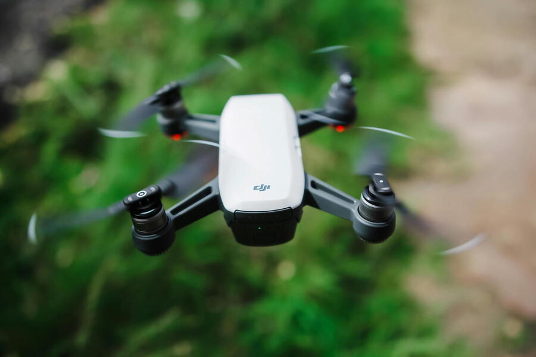

A new autonomous drone system could provide ecologists with deeper insights into animal behavior in the wild, a study suggests.
Drones, or unmanned aerial systems (UAS), are often used to collect massive amounts of high-quality aerial footage of unique places.
While most of these state-of-the-art technologies rely on human pilots to operate them, researchers have developed WildWing, a complete hardware and software open-source UAS for independently collecting dense animal behavioral data.
This single-drone system, which has so far collected about 37,000 images of various endangered animals, was created to help scientists automate and standardize data for better behavioral analysis, said Jenna Kline, lead author of the study and a graduate student in computer science and engineering at The Ohio State University.
“Animals and their habitats are changing rapidly, so if we want insights about them in real time, remote sensing technologies like drones and AI can play a big part in that,” she said.
Studying how animals behave in the wild can be challenging, in part due to how disruptive human noise may be to the creatures living in the region. Yet a drone’s ability to gather data much more quietly across challenging terrains and complete complex tracking and positioning tasks makes them powerful tools for studying the natural world, said Kline.
“By automating a mission, the data you collect is more reliable and consistent, which is really important if you want to build a data set to train a computer vision model,” she said.
Initially trained on data gathered at Mpala Research Center in Kenya, the WildWing drone is programmed to move forward until its computer vision model detects the species of interest, and once spotted, will keep the chosen animals within the center of its camera until commanded otherwise. This marked shift to automated classification and data handling allows researchers to focus on scaling up research objectives rather than the technical demands of piloting.
The study was recently published in the journal Methods in Ecology and Evolution.
The complete WildWing system costs $650 and incorporates drone hardware with custom software. The researchers used a Parrot Anafi drone, but said other drone models could be used.
Field tests to examine the accuracy of the drone’s navigation system took place at The Wilds conservation park in Ohio, where the device was tasked with tracking groups of zebras, giraffes and Przewalski’s horses. In simulations where autonomous navigation was implemented, the team’s drone was able to match target tracking by a UAS operated by a human pilot 87% of the time.
Additionally, the number of usable frames, or images with adequate resolution to assess each animal’s behavior, approached nearly 100% using the WildWing system. These results are significant performance improvements over human-driven attempts, said Kline.
Tanya Berger-Wolf, co-author of the study and faculty director of Ohio State’s Translational Data Analytics Institute, said that this adaptive approach will most certainly help scientists overcome current limitations to exploring wild environments as well as advance other fields reliant on large amounts of visual data, like imageomics.
“Drones provide an opportunity for scientists to expand their reach into the wild by studying animals in their natural habitats in the least invasive way possible,” said Berger-Wolf, who is also a professor of computer science and engineering, evolution, ecology and organismal biology, and electrical and computer engineering. “It’s that adaptability that is the big advantage of a system like this.”
While the study builds on previous work that addresses key questions about the pros and cons of autonomous technologies, what makes this particular project unique is that it demonstrates how researchers might turn commercial, off-the-shelf drone technologies into custom research tools, said Christopher Stewart, another co-author of the study and a professor of computer science and engineering at Ohio State.
“Historically, it’s been prohibitively expensive to create this type of tailored software, but making WildWing an open-source tool makes these advanced features available very broadly,” he said.
Since the system’s data and tracking algorithm will be made available to researchers and citizen scientists alike, the plan to continue improving WildWing’s capabilities should include developing it in a way that will keep future drone swarms both cost-effective and efficient, said Stewart.
To ensure this, the team’s next steps will be aimed at integrating more complex, long-term datasets into WildWing, as well as deploying the system into new environments to test its broader ability to advance other types of ecological research.
“Technology can give us a bigger piece of the puzzle to understand what’s happening in our ecosystem,” said Kline. “So I’m excited to keep pushing the boundaries of it to better understand and protect our natural world.”
Co-authors include Alison Zhong and Kevyn Irizarry from Ohio State, Charles V. Stewart from the Rensselaer Polytechnic Institute and Daniel I. Rubenstein from Princeton University. The study was supported by The National Science Foundation through Ohio State’s ICICLE Institute and the Imageomics Institute.
Originally posted by Ohio State News